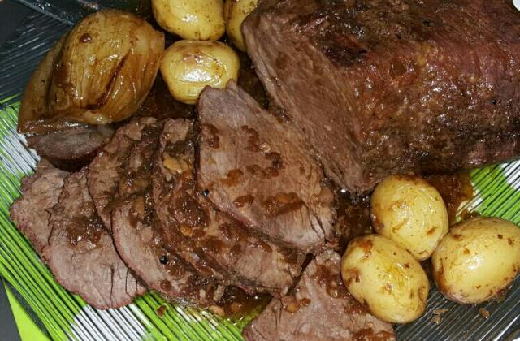
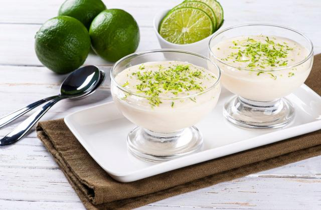

Picanha no forno com molho de cerveja
- 1 picanha fresca
- Sal grosso
- 4 cebolas inteiras pequenas
- 1 lata de cerveja
- 3 cabeças de alho
Modo de preparo
Aproximadamente 1h30m
Faça pequenos cortes no sentido contrário da fibra da carne e tempere com sal grosso como se fosse para churrasco.
Coloque em uma travessa, espalhe as cabeças de alho inteiras apenas tendo retirado a primeira casca e as cebolas também inteiras, apenas descascadas.
Regue tudo com 1 lata de cerveja
Leve ao forno por mais ou menos 1 hora coberta com papel alumínio, depois tire o papel para dourar
Arroz à grega

- 3 xícaras de Arroz
- 1 caixa de uvas-passas
- 5 colheres de ervilha
- 1 colher de manteiga
- 1 caçarola
- Queijo parmesão ralado
- Óleo
- Sal a gosto
- Salsa a gosto
- Cenoura a gosto
- Pimentão a gosto
- Cebola a gosto
- Cebolinha verde a gosto
- 6 xícaras de água
Modo de preparo
Aproximadamente 1h
Leve uma panela ao fogo com água, sal, um fio de óleo e espere ferver.
Adcione o arroz lavado e mexa bem.
Diminua o fogo, deixe a água secar e retire o arroz do fogo.
Em uma panela, leve uma caçarola ao fogo com a medida de manteiga e frite as passas e as ervilhas.
Despeje a mistura em uma tijela funda e junte a cebolinha verde, a cenoura, o pimentão, a cebola, a salsa e o parmesão.
Adicione o arroz cozido e misture tudo cuidadosamente.
Mousse de limão
- 1 lata de leite condensado.
- 1/2 xícara de suco de limão (limão expremido).
- 1 lata de creme de leite.
Modo de preparo
Aproximadamente 10m
Coloque no liquidificador o creme de leite e o leite condensado.
Bata um pouco e depois vá acrescentando o suco do limão, aos poucos.
Assim que ele ficar bem consistente, leve-o à geladeira.